Departamento de Estatística — Universidade Federal de Pernambuco (UFPE)
II GEOTEC — Encontro de Geotecnologias | IFPB Campus João Pessoa — Novembro de 2026
Trajetória da Pesquisa
e Contexto Acadêmico
Esta conferência consolida os resultados da pesquisa sobre a dinâmica geoespacial das violações de direitos humanos no Nordeste do Brasil (ano de 2024).
Histórico e Maturação Científica do Trabalho:
III WDCD (III Workshop de Divulgação Científica e Didáticas): Apresentação dos pilares conceituais de divulgação e democratização do dado público de violência.
XIX EMR | V EPE (XIX Escola de Modelos de Regressão & V Encontro Paraibano de Estatística): Discussão aprofundada dos modelos estatísticos, formulação do Estimador Bayesiano Empírico e testes de varredura espacial.
II GEOTEC (2026): Apresentação da integração plena com Geotecnologias, análise de clusters territoriais, implicações para SIG e direcionamento de políticas públicas.
Evolução Metodológica
O percurso investigativo evoluiu do tratamento tabular descritivo para uma esteira geotecnológica robusta, capaz de identificar hotspots, neutralizar instabilidades em pequenos municípios e subsidiar a gestão pública.
Foco no II GEOTEC:
Geoprocessamento, análise espacial de áreas, suporte a decisões governamentais e justiça territorial.
Geotecnologias e Direitos Humanos
Por que Conectar?
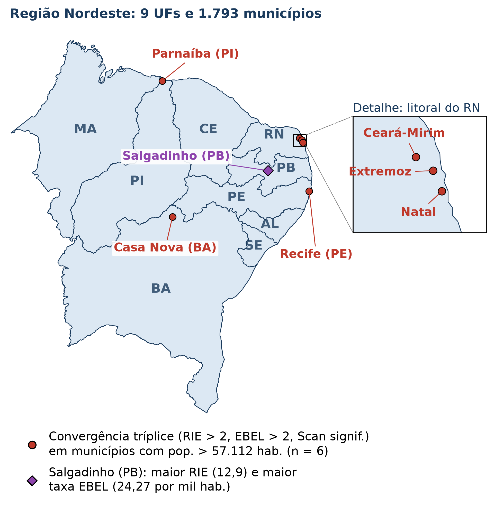
O Território como Determinante Social:
A violência e a violação de direitos humanos não ocorrem de forma homogênea no espaço.
Padrões de vulnerabilidade refletem assimetrias históricas, segregação socioespacial e desigualdade no acesso a serviços públicos.
O Papel Transformador das Geotecnologias:
Sistemas de Informação Geográfica (SIG): Integração de bases administrativas e demográficas.
Estatística Espacial: Transição da simples visualização cartográfica para a inferência estocástica e detecção de aglomerados significativos.
Inteligência Territorial: Conversão de 110.278 denúncias em insumo acionável para alocação prioritária de redes de acolhimento.
Estrutura da Apresentação
Introdução e Contextualização
Cenário nacional da violência e marco legal
O serviço Disque 100 (Disque Direitos Humanos)
O território nordestino e seus paradoxos
Arcabouço Metodológico e Teórico
Razão de Incidência Espacial (RIE)
Autocorrelação Espacial: Moran Global e LISA
Estimador Bayesiano Empírico Local (EBEL)
Varredura Scan Espacial de Kulldorff
Perfil das Denúncias no Nordeste (2024)
Temporalidade (horários e dias da semana)
Perfis de denunciantes, vítimas e suspeitos
O domicílio como epicentro da violação
Resultados Espaciais e Detecção de Conglomerados
Diagnóstico de dependência espacial global
Aglomerados Alto-Alto no litoral vs. ausência de aglomerados no oeste
O caso emblemático de Salgadinho (PB)
Convergência dos métodos (49 municípios críticos)
Os 6 municípios de grande porte
Geotecnologias, Políticas Públicas e Tomada de Decisão
Cobertura institucional e subnotificação
Diretrizes para alocação de equipamentos sociais
Trabalhos futuros e considerações finais
Panorama da Violência no Brasil
A URGÊNCIA do Tema
Em 1996, a Assembleia Mundial da Saúde (Resolução WHA49.25) declarou a violência como um dos principais problemas de saúde pública do mundo.
A OMS define violência como o uso intencional da força física ou do poder, real ou em ameaça, que resulte em lesão, morte, dano psicológico ou privação.
Indicadores Críticos no Brasil (18º Anuário FBSP, 2024):
46.328 Mortes Violentas Intencionais (MVI) em 2023.
Taxa nacional de 22,8 MVI por 100 mil habitantes.
Crescimento de todos os tipos de violência contra as mulheres.
Taxa de 41,4 estupros por 100 mil habitantes.
Cenário de Insegurança
Essas formas de violência violam os direitos humanos de milhares de pessoas e impõem um cenário persistente de insegurança à população brasileira.
46.328
Mortes Violentas Intencionais no Brasil em 2023
41,4 / 100k
Taxa de Estupros no Brasil (2023)
Direitos Humanos
Marcos Legais e Garantias
Declaração Universal (1948)
Resolução 217 A (III) da Assembleia Geral da ONU.
Estabelece 30 artigos universais e inalienáveis, consagrando o direito à vida, integridade, liberdade e igualdade de tratamento perante a lei.
Constituição Cidadã de 1988
Eleva a dignidade da pessoa humana a fundamento da República Federativa do Brasil (Art. 1º, III).
Garante inviolabilidade do direito à vida, liberdade, igualdade, segurança e propriedade (Art. 5º).
Código Penal e Legislação Correlata
Decreto-Lei nº 2.848/1940 e leis protetivas específicas:
Estatuto da Criança e do Adolescente (ECA — Lei 8.069/1990)
Estatuto da Pessoa Idosa (Lei 10.741/2003)
Lei Maria da Penha (Lei 11.340/2006)
Lei Brasileira de Inclusão da Pessoa com Deficiência (Lei 13.146/2015)
O Desafio: Como conectar as previsões normativas à realidade concreta dos territórios? A resposta passa pela vigilância geoespacial e canais de denúncia ágeis.
O Serviço Disque 100
(Disque Direitos Humanos)
Criado pelo Ministério dos Direitos Humanos e da Cidadania (MDHC), o Disque 100 é um serviço público estratégico e gratuito voltado para o acolhimento de denúncias de violações de direitos fundamentais.
Principais Diretrizes Operacionais:
Disponibilidade Integral: Opera 24 horas por dia, 7 dias por semana, inclusive feriados.
Acesso Gratuito e Universal: Ligação gratuita de qualquer telefone fixo ou móvel.
Possibilidade de Anonimato: A denúncia pode ser feita de forma anônima.
Alcance Internacional: Atendimento estendido a brasileiros no exterior em mais de 50 países (EUA, Portugal, Espanha, Itália, etc.).
Encaminhamento Rápido
Após triagem e qualificação técnica, as denúncias são despachadas aos órgãos da rede de proteção em até 24 horas.
Múltiplos Canais de Entrada:
Chamada Telefônica (100)
WhatsApp Oficial do MDHC
Aplicativo Direitos Humanos Brasil
Portal Web gov.br/mdh
O Fluxo Institucional da Denúncia
1. Recepção
2. Triagem e Qualificação
3. Georreferenciamento
4. Despacho (até 24h)
5. Atuação Local
Cidadão Telefone 100, App, Web ou WhatsApp
Operador MDHC Identificação da suposta violação, vítima e agressor
Localização Atribuição do município do fato e dados contextuais
Rede de Defesa Envio automatizado aos órgãos competentes
Acolhimento e Justiça Conselho Tutelar, Delegacias, MP, Defensoria
Ponto Crítico: O fluxo institucional depende da capacidade de resposta local de cada município. Municípios sem Conselhos Tutelares estruturados ou sem delegacias especializadas acumulam passivos graves.
Visão Geotecnológica: Conhecer o tempo e o destino da denúncia permite mapear a eficiência territorial da rede de proteção social.
População estimada em 2024 pelo IBGE (SIDRA): mais de 57 milhões de habitantes.
Heterogeneidade Intrarregional:
Faixa Litorânea e Zonas da Mata: Alta densidade demográfica, pólos industriais e turísticos, conurbações metropolitanas complexas.
Agreste e Sertão Semiárido: Baixa densidade, dependência agropecuária, maiores distâncias geográficas até serviços de alta complexidade.
O Paradoxo Nordestino
Dinamismo Econômico vs. Vulnerabilidade Estrutural: O Nordeste associa expressivo crescimento econômico e desenvolvimento social nas últimas décadas a indicadores críticos de violência (FBSP, 2024).
2 de 3 Estados
com maiores taxas de MVI do Brasil (Bahia e Pernambuco)
Segundo o Anuário de Segurança Pública 2024, a dinâmica do crime organizado e disputas de facções no Nordeste intensificaram as taxas de letalidade violenta.
7 de 10 Municípios
mais violentos do Brasil pertencem ao Nordeste (6 na BA, 1 no CE)
Esse panorama torna a análise espacial das denúncias ao Disque 100 na região um campo de análise relevante e urgente para o planejamento governamental.
Falácia Ecológica: Inferir que indivíduos em uma macrorregião possuem o mesmo risco médio de denúncias.
Ignorar a Primeira Lei da Geografia (Tobler, 1970):
“Todas as coisas estão relacionadas com todas as outras, mas coisas próximas estão mais relacionadas do que coisas distantes.”
Benefícios da Estatística Espacial
Detecção de Dependência Espacial: Verificar se o número de denúncias de um município depende do comportamento de seus vizinhos.
Identificação de Hotspots Estatísticos: Diferenciar aglomerados reais de flutuações aleatórias.
Estabilização de Pequenas Áreas: Evitar falsos alarmes em municípios com populações diminutas.
Territorialização de Recursos: Alocar conselheiros tutelares, viaturas e centros de acolhimento onde a demanda é comprovadamente crítica.
Base de Dados e Critérios Metodológicos
Fonte de Denúncias:
Dados Abertos do Governo Federal / MDHC (2024).
Recorte temporal: 01 de janeiro a 31 de dezembro de 2024.
Total no Nordeste: 110.278 registros de denúncias.
Metadados: data/hora, canal, denunciante, características de vítimas e suspeitos, natureza da violação e município do fato.
Fonte Populacional:
Estimativa populacional municipal do IBGE para 2024 (SIDRA).
Metodologia baseada na relação de tendência intercensitária.
Pressuposto de Independência
Diante da anonimização estrita e da impossibilidade de identificar renotificações da mesma violação em momentos distintos, todas as denúncias foram tratadas como eventos estocasticamente independentes agrupados no nível municipal.
Ambiente Computacional: Software R (R Core Team, 2025) com os pacotes espaciais sf, spdep, SpatialEpi e tmap.
Perguntas Centrais da Investigação
Existe dependência espacial significativa?
As denúncias de violações de direitos humanos no Nordeste formam aglomerados territoriais ou sua distribuição decorre puramente do acaso espacial?
Como neutralizar a instabilidade das pequenas áreas?
Como garantir que municípios de 2.000 a 5.000 habitantes com 2 ou 3 denúncias não apresentem taxas inflacionadas espúrias?
Onde residem os verdadeiros conglomerados estatísticos?
O método de varredura Scan de Kulldorff confirma os mesmos clusters sugeridos pelos índices locais de autocorrelação (LISA)?
Existe convergência multi-método para subsidiar políticas públicas?
Quais municípios nordestinos são qualificados simultaneamente como prioritários por critérios empíricos, bayesianos e de varredura espacial?
Fluxograma da Abordagem
Metodológica Integrada
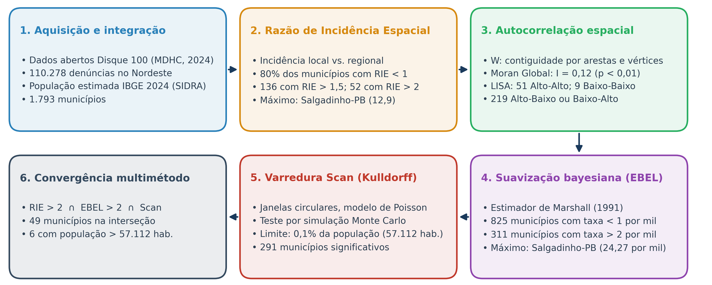
Esteira analítica sequencial: integração do dado bruto ao diagnóstico de convergência territorial multi-método.
O Desafio de Pequenas Áreas
(Small Area Problem)
Considere a taxa bruta local em uma sub-região \(i\): \[r_i = \frac{y_i}{n_i}\] onde \(y_i\) é o número de denúncias e \(n_i\) é a população.
A variância da taxa bruta sob o modelo de Poisson é inversamente proporcional à população: \[\mathrm{Var}(r_i) = \frac{\lambda_i}{n_i}\]
Consequência:
Em municípios com \(n_i\) muito pequeno (ex.: 2.500 hab.), uma única denúncia adicional provoca grandes oscilações na taxa calculada.
Gera picos espúrios no mapa (variabilidade amostral).
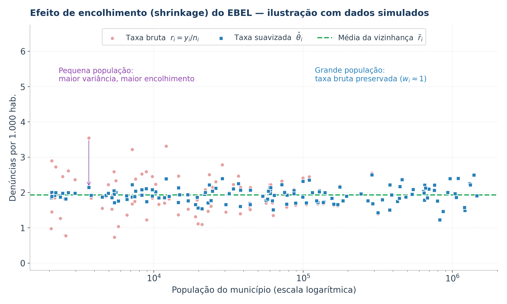
O Estimador Bayesiano Empírico Local opera um efeito de shrinkage (encolhimento), estabilizando as taxas de pequenas áreas em direção à média local.
Razão de Incidência Espacial (RIE)
A Razão de Incidência Espacial (RIE) é uma medida padronizada de risco relativo empírico que compara a incidência local observada na sub-região \(i\) com a incidência global da macrorregião:
\[
\text{RIE}_i = \frac{\text{Incidência Local no Município } i}{\text{Incidência Global na Região Nordeste}} = \frac{y_i / n_i}{\displaystyle \frac{\sum_{k=1}^m y_k}{\sum_{k=1}^m n_k}}
\]
onde:
\(y_i\) é o número de denúncias observadas no município \(i\) em 2024
\(n_i\) é a população estimada do município \(i\) em 2024
\(m = 1.793\) é o número total de municípios da Região Nordeste
\(\sum_{k=1}^m y_k = 110.278\) é o somatório total de denúncias no Nordeste
\(\sum_{k=1}^m n_k\) é a população total acumulada da Região Nordeste
Interpretação Cartográfica da RIE
Faixa da RIE
Interpretação
Implicação Analítica
\(\text{RIE}_i = 0\)
Nenhuma denúncia no período
Investigar subnotificação
\(0 < \text{RIE}_i < 1\)
Inferior à incidência regional
Abaixo da referência
\(\text{RIE}_i = 1\)
Igual à incidência regional
Referência
\(\text{RIE}_i > 1,5\)
Incidência ao menos 50% superior à regional
Sinal de excesso de incidência
\(\text{RIE}_i > 2,0\)
Incidência superior ao dobro da regional
Prioridade de investigação
Vantagem da RIE
Permite comparar municípios de portes muito distintos — como capitais e cidades do semiárido — em uma mesma escala adimensional de incidência relativa.
Ressalva: Por basear-se em taxas brutas, a RIE é sensível a populações pequenas, o que motiva a suavização bayesiana.
Matriz de Pesos Espaciais (\(\mathbf{W}\))
Para modelar a dependência espacial entre os \(1.793\) municípios, constrói-se uma matriz de vizinhança espacial \(\mathbf{W} \in \mathbb{R}^{m \times m}\):
Critério de Contiguidade de Primeira Ordem por Arestas e Vértices (Queen):
Dois municípios \(i\) e \(j\) são considerados vizinhos se compartilham qualquer ponto de fronteira comum (arestas ou vértices): \[w_{ij} = \begin{cases} 1, & \text{se } i \text{ e } j \text{ compartilham fronteira} \\ 0, & \text{caso contrário (ou } i = j) \end{cases}\]
Padronização por Linha:
Assegura que o somatório dos pesos de cada município seja unitário (\(\sum_j w_{ij}^* = 1\)): \[w_{ij}^* = \frac{w_{ij}}{\sum_{k=1}^m w_{ik}}\]
O produto \(\mathbf{W}^*\mathbf{z}\) representa a defasagem espacial (spatial lag), isto é, a média ponderada dos vizinhos.
Arestas e vértices vs. apenas arestas
O critério por arestas e vértices (Queen) considera vizinhos também os municípios que compartilham apenas um vértice, enquanto o critério somente por arestas (Rook) os exclui. Em malhas municipais irregulares, o primeiro reduz o número de áreas sem vizinhos e é amplamente adotado em análises de dados de área.
Índice I de Moran Global
O Índice I de Moran Global (Moran, 1950) mede o grau de autocorrelação espacial global de uma variável contínua ou de contagem na malha territorial:
\(m\) é o número total de municípios analisados (\(m = 1.793\))
\(x_i\) e \(x_j\) são os valores observados (número de denúncias) nos municípios \(i\) e \(j\)
\(\bar{x} = \frac{1}{m}\sum_{i=1}^m x_i\) é a média aritmética global
\(w_{ij}\) é o elemento da matriz de conectividade espacial \(\mathbf{W}\)
\((x_i - \bar{x})(x_j - \bar{x})\) é o produto cruzado dos desvios em relação à média
Teste de Hipóteses e
Inferência do Moran Global
Teste de Aleatoriedade Espacial
Hipótese Nula (\(H_0\)): Distribuição espacialmente aleatória das denúncias. Ausência de dependência espacial.
Hipótese Alternativa (\(H_1\)): Presença de autocorrelação espacial estruturada.
Propriedades Estatísticas sob \(H_0\)
O valor esperado sob \(H_0\) é dado por: \[E[I] = -\frac{1}{m - 1} \approx -\frac{1}{1792} \approx -0,000558\]
A estatística de teste padronizada (\(z\)-score) é: \[Z_I = \frac{I - E[I]}{\sqrt{\mathrm{Var}(I)}} \sim \mathcal{N}(0, 1)\]
Escala de Interpretação
\(I > E[I]\) (\(Z_I > 0\) e \(p < 0,05\)):
Autocorrelação Espacial Positiva: Municípios com altos números de denúncias vizinham municípios também altos, e baixos vizinham baixos. Aglomeração (clustering).
\(I \approx E[I]\) (\(p \ge 0,05\)):
Aleatoriedade Espacial: Ausência de estrutura espacial (independência entre vizinhos).
\(I < E[I]\) (\(Z_I < 0\) e \(p < 0,05\)):
Autocorrelação Espacial Negativa: Padrão alternado entre vizinhos (valores dissimilares adjacentes).
Índice de Moran Local (LISA)
Proposto por Anselin (1995), o LISA (Local Indicators of Spatial Association) decompõe o índice global para identificar a contribuição individual de cada município na formação de clusters espaciais:
\(z_i\) e \(z_j\) são as variáveis padronizadas nos municípios \(i\) e \(j\)
\(s^2 = \frac{1}{m}\sum_i (z_i - \bar{z})^2\) é a variância amostral
A soma de todos os índices locais é proporcional ao Moran Global: \[\sum_{i=1}^m I_i = m \cdot I\]
Propriedades Fundamentais
Permite testar a significância estatística local via pseudo-p-valores obtidos por permutações condicionais de Monte Carlo (ex.: 999 permutações).
Gera o Moran Scatterplot e o Mapa de Clusters LISA.
O Diagrama de Dispersão de Moran
Moran Scatterplot
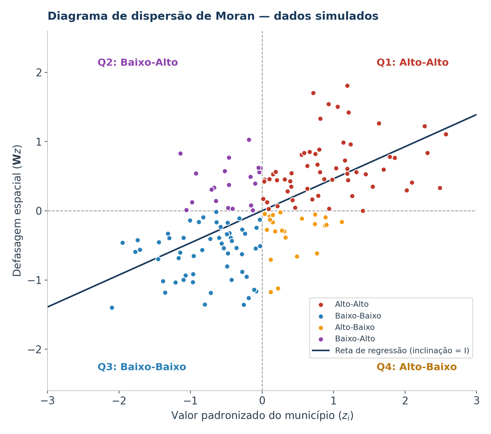
Q1 — Alto-Alto (Hotspots):
Municípios com alta incidência rodeados por vizinhos também com alta incidência. Focos de intervenção prioritária.
Q3 — Baixo-Baixo (Coldspots):
Municípios de baixa incidência cercados por vizinhos de baixa incidência.
Q2 — Baixo-Alto (Outlier Espacial):
Município de baixa incidência cercado por vizinhos de alta incidência (possível ilha de subnotificação).
Q4 — Alto-Baixo (Outlier Espacial):
Polo isolado de alta incidência em meio a vizinhos de baixa incidência.
Estimador Bayesiano Empírico Local
EBEL
Baseado na formulação de Marshall (1991), o estimador assume que a verdadeira taxa de ocorrência \(\theta_i\) em cada município é uma variável latente não observada.
As contagens observadas \(y_i\) condicionais a \(\theta_i\) seguem uma distribuição de Poisson: \[y_i \mid \theta_i \sim \text{Poisson}(n_i \theta_i)\] onde \(n_i\) é a população em risco.
A média e a variância a priori de \(\theta_i\) são estimadas pelo método dos momentos na vizinhança espacial de \(i\), resultando em uma média ponderada entre a taxa local e a taxa da vizinhança.
Intuição Bayesiana
Se a população \(n_i\) é grande, a estimativa permanece próxima da taxa observada \(r_i\). Se \(n_i\) é pequena, a estimativa incorpora informação da vizinhança (borrowing strength), sendo encolhida em direção à média local.
Reduz a instabilidade das taxas e os falsos positivos associados a populações pequenas.
Dedução Matemática do Estimador EBEL
O estimador da taxa suavizada para o município \(i\), denotado por \(\hat{\theta}_i\), é dado pela combinação convexa:
com \(r_j = y_j / n_j\) a taxa bruta no município \(j\) e \(\bar{n}_i\) a população média dos municípios de \(V_i\).
Varredura Scan Espacial de Kulldorff
Desenvolvido por Kulldorff & Nagarwalla (1995), o método de varredura espacial testa se eventos pontuais ou de área apresentam agrupamentos anômalos.
Mecanismo das Janelas Circulares:
Posiciona-se um círculo centrado no centróide geográfico de cada município.
O raio da circunferência cresce de forma contínua e gradual, englobando centróides adjacentes.
A expansão é contida por um limiar máximo predefinido da população sob risco da região (adotado 0,1% da população total do Nordeste, equivalente a 57.112 pessoas).
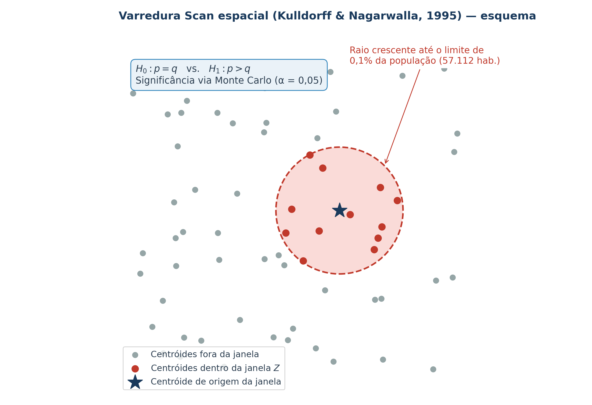
Função de Verossimilhança e
Simulação de Monte Carlo
Sob a hipótese nula \(H_0\), o risco de uma denúncia é constante em todo o Nordeste (\(p = q\)). Sob \(H_1\), o risco dentro da janela circular \(Z\) é superior ao risco externo (\(p > q\)).
A Razão de Verossimilhança (LRR) sob o modelo Poisson é calculada para cada círculo candidato \(Z\):
\(C\) é o total de denúncias no Nordeste (\(110.278\)) e \(c_Z\) é o total de denúncias observadas dentro da janela \(Z\)
\(E[c_Z] = N_Z \cdot (C / N)\) é o número esperado de denúncias sob \(H_0\), proporcional à população \(N_Z\)
O círculo que maximiza \(\mathrm{LRR}(Z)\) é o Cluster Mais Provável (Most Likely Cluster)
A significância estatística (\(p\)-valor) é obtida via Simulação de Monte Carlo sob \(H_0\), adotando \(\alpha = 0,05\)
Resultados Descritivos
Panorama das 110.278 Denúncias
Dimensão Analisada
Categoria Predominante
Percentual / Valor
Implicação Geotecnológica e Social
Volume Geral
Total de Denúncias no Nordeste (2024)
110.278 registros
Média de ~61,5 denúncias por município
Denunciante
Terceiros (vizinhos, familiares, agentes)
85,22%
Própria vítima: 14,64% das denúncias
Canal de Acesso
Ligação Telefônica Convencional
90,86%
WhatsApp: 8,20%; outros canais: 0,94%
Pico Diário
Horário Comercial (Pico às 10h da manhã)
08h às 18h
Menor volume registrado às 05h da manhã
Dinâmica Semanal
Dias Úteis (Segunda a Sexta-feira)
80,5%
Redução no sábado (10,7%) e no domingo (8,8%)
Vítimas Menores
0 a 17 anos (bebês, crianças e adolescentes)
46,74%
Soma das faixas até 2, 3–11 e 12–17 anos
Vítimas Idosas
60 a 90+ anos de idade
33,81%
Faixa etária individual mais frequente
Local do Fato
Casa onde reside a vítima (com ou sem o suspeito)
79,33%
48,90% na casa da vítima e do suspeito
Tipo de Violação
Violação contra a Integridade Física
36,57%
Seguida da Integridade Psíquica (33,48%)
Dinâmica Temporal
A Rotina das Notificações
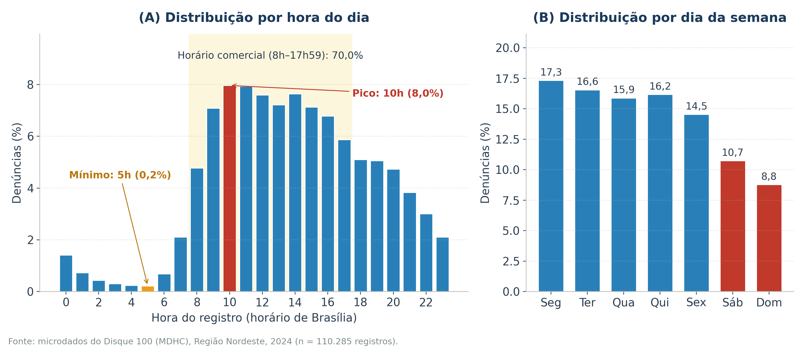
Padrão Circadiano (Painel A):
Pico às 10h (8,0%) e segundo pico às 14h.
70,0% dos registros ocorrem entre 8h e 17h59.
Menor volume às 5h (0,2%), com queda no fim da noite e na madrugada.
Efeito Fim de Semana (Painel B):
Dias úteis: entre 14,5% e 17,3% ao dia.
Sábado (10,7%) e domingo (8,8%) apresentam redução.
Hipótese: a menor oferta de serviços da rede de proteção no fim de semana pode reduzir os encaminhamentos.
Perfil dos Atores
Denunciantes e Canais
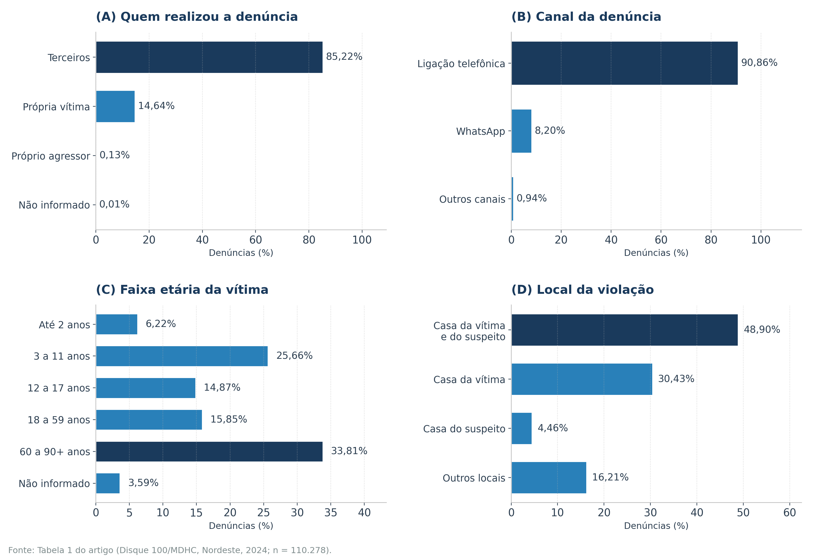
85,22% feitas por Terceiros:
Evidencia o papel da rede comunitária, de profissionais e de vizinhos na notificação.
A própria vítima denunciou em 14,64% dos casos.
90,86% via Telefonia:
WhatsApp respondeu por 8,20% e os demais canais por 0,94%.
A ligação gratuita permanece como principal canal de acesso.
Perfil das Vítimas
Distribuição por Faixa Etária
80,6% das Vítimas são Crianças/Adolescentes ou Idosos
A maior parte das denúncias ao Disque 100 envolve indivíduos nos extremos da pirâmide etária; adultos de 18 a 59 anos somam 15,85% e 3,59% não têm a idade informada.
46,74%
Crianças e Adolescentes (0 a 17 anos)
Até 2 anos: 6,22%.
3 a 11 anos: 25,66%.
12 a 17 anos: 14,87%.
33,81%
Idosos (60 a 90+ anos de idade)
Faixa etária individual mais frequente.
Contexto de envelhecimento populacional e dependência de cuidados.
Perfil dos Suspeitos
Características dos Suspeitos
Faixa Etária do Agressor:
59,3% pertencem à faixa de 18 a 59 anos de idade (adultos em idade produtiva e de chefia domiciliar).
1,72% de 12 a 17 anos, 6,41% com 60 anos ou mais e 32,62% sem informação.
Sexo dos Suspeitos (total de denúncias):
23,23% de mulheres apontadas como suspeitas.
19,27% de homens apontados como suspeitos.
Em 57,50%, o sexo do suspeito não foi informado.
Hipótese: maior presença feminina nas funções de cuidado no domicílio.
O Problema do Dado Faltante
O fato de 57,50% dos registros de suspeitos e 54,62% de vítimas não informarem o sexo evidencia limitações no preenchimento administrativo.
Demanda Geotecnológica: Necessidade de algoritmos de imputação espacial e padronização digital dos formulários de atendimento.
Onde a Violência Ocorre?
O Domicílio como Local de Ocorrência
48,90%
Residência Compartilhada (Vítima e Suspeito moram juntos)
30,43%
Casa da Vítima (suspeito não reside)
20,67%
Casa do Suspeito (4,46%) e Outros Locais (16,21%)
79,33% na Casa da Vítima
Diferentemente de crimes em vias públicas, as violações denunciadas ocorrem predominantemente no espaço privado, onde o policiamento ostensivo tem alcance limitado.
Impacto Territorial: Estratégias baseadas apenas em policiamento ostensivo têm alcance limitado nesse contexto. A prevenção exige agentes comunitários de saúde, assistentes sociais e visitas domiciliares georreferenciadas.
Natureza das Violações e
Distribuição por Estados
Tipologia das Violações
Integridade Física: 36,57%
Integridade Psíquica: 33,48%
Negligência: 17,82%
Direitos Sociais: 3,46%
Liberdade Sexual: 3,30%
Integridade Patrimonial: 2,89%
Outras: 2,48%
Liderança por Estados e Cidades
Bahia: Concentra 25,1% das denúncias do Nordeste (estado mais populoso da região).
Fortaleza (CE): Município que registrou a maior quantidade absoluta de casos em toda a Região Nordeste.
Pernambuco e Ceará formam, junto com a Bahia, os três grandes eixos de volume absoluto.
Efeito de Escala: Grandes cidades lideram em contagens absolutas devido ao contingente populacional; a comparação exige taxas relativas.
Resultados Espaciais
Autocorrelação Global Confirmada
Índice I de Moran Global = 0,12 (\(p < 0,01\))
Rejeição da hipótese nula de aleatoriedade espacial ao nível de 1% de significância.
O que significa \(I = 0,12\)?
Confirma a existência de autocorrelação espacial positiva estatisticamente significativa.
Municípios com elevado volume de denúncias não são eventos isolados: tendem a estar cercados por vizinhos que também apresentam elevadas denúncias.
A magnitude (\(I = 0,12\)) indica autocorrelação positiva de intensidade fraca, porém significativa.
Validação Metodológica
O valor esperado sob independência espacial seria \(E[I] = -1/1792 \approx -0,00056\).
O \(p\)-valor inferior a 0,01 indica que é improvável que tal agrupamento decorra apenas do acaso.
Justifica a análise de decomposição local (LISA).
Mapeamento dos Clusters Locais LISA
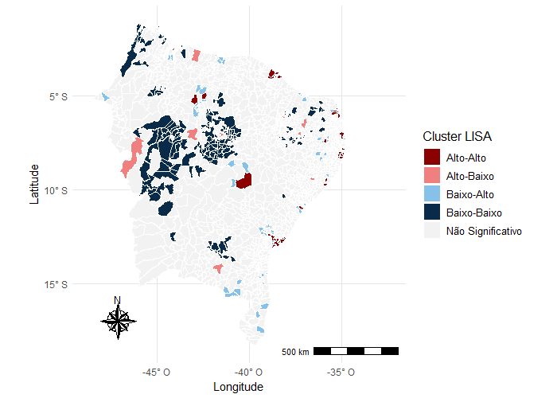
Tipologia dos Clusters LISA
51 Municípios Alto-Alto (Hotspots):
Parte deles localizada mais próxima ao litoral.
9 Municípios Baixo-Baixo (Coldspots):
Localizados mais próximos ao oeste e noroeste da região.
219 Municípios Outliers Espaciais:
Alto-Baixo ou Baixo-Alto (zonas de contraste e ruptura territorial).
A Geografia dos Clusters LISA
Litoral vs. Interior Ocidental
O Corredor Litorâneo (Hotspots Alto-Alto)
Localização: Parte dos municípios do cluster Alto-Alto situa-se mais próxima ao litoral.
Hipóteses explicativas (não testadas no estudo):
Maior penetração de campanhas informativas.
Maior cobertura de telecomunicações.
Maior presença de órgãos da rede de proteção.
Os Coldspots do Oeste (Baixo-Baixo)
Apenas 9 municípios no cluster Baixo-Baixo, situados mais próximos ao oeste e noroeste da região.
O Dilema da Subnotificação:
Menor ocorrência de violações ou subnotificação?
Possíveis barreiras de acesso aos canais e receio de exposição em comunidades pequenas.
Conclusão do LISA: O mapa do Moran Local pode refletir tanto a ocorrência das violações quanto a propensão local à notificação.
Razão de Incidência Espacial no Nordeste
Distribuição Empírica da RIE
80% dos municípios: Apresentaram \(\text{RIE} < 1\) (incidência local abaixo da média regional).
136 municípios: Apresentaram \(\text{RIE} > 1,5\) (incidência ao menos 50% superior à regional).
52 municípios: Apresentaram \(\text{RIE} > 2,0\) (incidência superior ao dobro da regional).
Espacialização
Há maior quantidade de municípios com \(\text{RIE} > 1,5\) mais próximos ao litoral.
Maior valor: Salgadinho (PB), \(\text{RIE} = 12,9\).
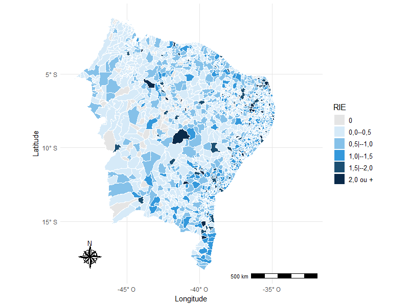
O Caso Extremo de Salgadinho (PB)
Análise de um Valor Extremo
Os Dados de Salgadinho - PB:
População estimada IBGE 2024: 3.437 habitantes (85 denúncias).
Maior RIE do Nordeste: 12,9.
Maior taxa suavizada: 24,27 por mil hab.
Como Interpretar este Valor?
RIE = 12,9 significa quase 13 vezes mais denúncias por habitante do que a média da Região Nordeste.
Em população pequena, poucas dezenas de denúncias produzem taxa muito elevada.
Questão Interpretativa
O valor reflete maior ocorrência de violações ou maior propensão local à notificação (p. ex., registros concentrados por um mesmo órgão)? Os dados agregados não permitem distinguir.
O Papel do Estimador Bayesiano:
Mesmo após a suavização bayesiana empírica local, Salgadinho manteve a maior taxa do Nordeste (24,27 por mil hab.), indicando que o valor elevado não é explicado apenas pela instabilidade de pequena área.
Mapeamento da Taxa Suavizada Bayesiana
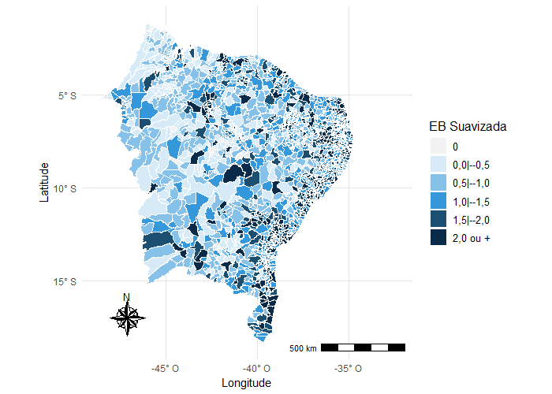
825 Municípios: Taxa suavizada inferior a 1 denúncia por 1.000 habitantes.
311 Municípios: Taxa suavizada superior a 2 denúncias por 1.000 habitantes.
O que a Suavização Evidencia?
Atenua flutuações aleatórias de municípios com pequena população.
Observa-se maior concentração de municípios com taxas superiores a 1,5 próximo ao litoral, padrão semelhante ao da RIE.
Média a posteriori ponderada (\(w_i r_i + (1-w_i)\bar{r}_i\))
Sensibilidade a Pequenas Populações
Extremamente alta (sensível a ruído amostral)
Controlada via shrinkage da vizinhança
Incorporação da Geografia
Apenas comparação pontual com o todo
Uso explícito da topologia da vizinhança (\(V_i\))
Municípios em Alerta no Nordeste
52 municípios com RIE \(> 2,0\)
311 municípios com Taxa \(> 2,0\) por mil hab.
Papel na Gestão Pública
Identificação rápida de picos e anomalias
Estimação mais estável da incidência
Conclusão Comparativa: A RIE é uma medida empírica sensível a variações locais, enquanto o Estimador Bayesiano atua como um suavizador espacial, conferindo maior estabilidade aos mapas temáticos.
Varredura Scan de Kulldorff
291 Municípios em Clusters
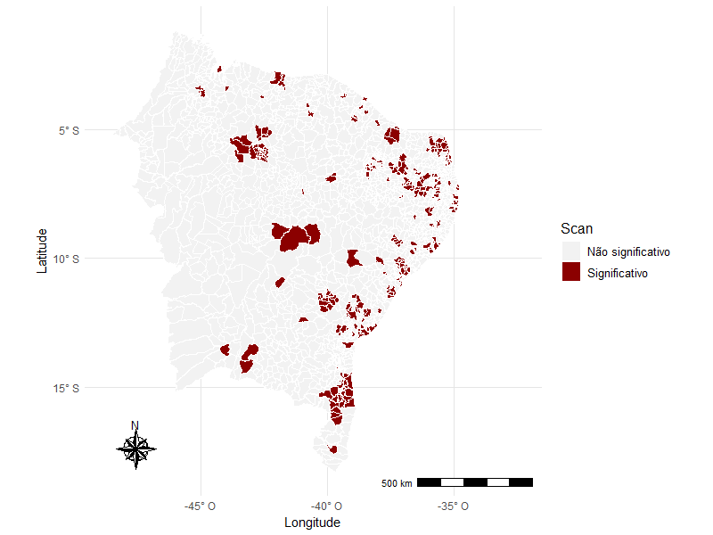
291 Municípios Significativos (\(p < 0,05\)):
Municípios em que a quantidade de denúncias em relação à população é estatisticamente superior ao esperado sob o modelo de Poisson.
Configuração Espacial:
Maior concentração de municípios significativos próximo ao litoral.
Ausência de municípios significativos no oeste da região.
O Oeste Nordestino:
Por que Não Há Clusters no Oeste?
Ausência de Aglomerados Significativos no Oeste
Um dos resultados da varredura Scan é a ausência de municípios significativos no oeste da região, enquanto os conglomerados concentram-se mais próximos ao litoral.
Hipótese 1: Baixa Cobertura Institucional
Ausência de postos físicos do Estado e baixa atuação de conselhos tutelares.
Populações rurais dispersas sem conectividade estável para ligar ao 100.
Receio quanto ao anonimato em municípios de pequeno porte.
Hipótese 2: Fatores Socioculturais
Dinâmicas comunitárias tradicionais em que conflitos são mediados intrafamiliarmente.
O dado reflete menor propensão à denúncia formal, e não necessariamente ausência de violência.
Convergência Multi-Método
Triangulação Estatística
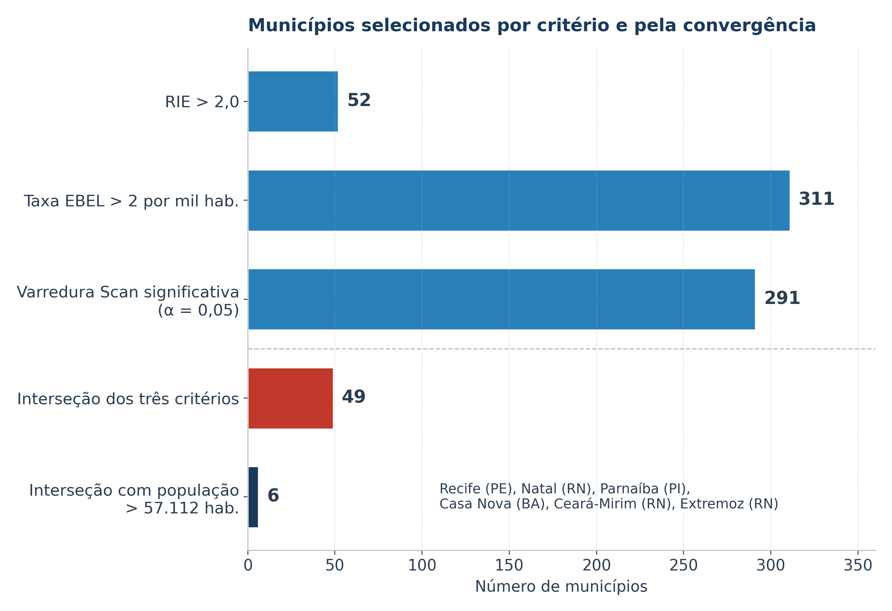
Os Três Filtros Estatísticos:
\(\text{RIE} > 2,0\) (52 municípios)
Taxa Bayesiana \(> 2,0\) por mil hab. (311 municípios)
49 municípios satisfazem simultaneamente os três critérios: RIE > 2, taxa suavizada > 2 por mil hab. e significância na varredura Scan.
Os 6 Municípios de Grande Porte
Dentre os 49 municípios da interseção tríplice, 6 possuem população superior a 57.112 habitantes (limiar populacional de 0,1% da varredura Scan):
Recife (PE) — Capital de Pernambuco
Natal (RN) — Capital do Rio Grande do Norte
Parnaíba (PI) — Segundo maior município do Piauí
Casa Nova (BA) — Submédio São Francisco
Ceará-Mirim (RN) — Região Metropolitana de Natal
Extremoz (RN) — Região Metropolitana de Natal
Independência de Vizinhos
Como cada um possui população superior ao limite da janela (0,1% da população), esses 6 municípios não tiveram influência de seus vizinhos para serem considerados significativos na varredura Scan.
Destaque para o RN: 3 dos 6 municípios situam-se no Rio Grande do Norte (Natal, Ceará-Mirim e Extremoz), todos na Região Metropolitana de Natal.
Geotecnologias na Prática
Da Tabela ao SIG Decisório
A Realidade dos Dados Públicos Tradicionais
Planilhas CSV ou Excel com milhões de linhas.
Análises resumidas a rankings estaduais ou médias macroeconômicas.
Inviabilidade de visualização por equipes técnicas de assistência social e segurança pública.
A Abordagem via Geotecnologias
Geocodificação e Padronização: Conversão de metadados em camadas vetoriais geográficas.
Interoperabilidade: Cruzamento dinâmico de dados de denúncias com camadas de infraestrutura social (CRAS, CREAS, escolas, postos de saúde).
Painéis Interativos (WebGIS / Dashboards): Alertas territoriais automáticos para gestores municipais e estaduais.
O dado ganha vida quando associado às coordenadas geográficas da malha territorial.
Cobertura Institucional
e o Dilema da Subnotificação
Em 80% dos municípios nordestinos, a RIE foi menor que 1,0, e em centenas de cidades do sertão as denúncias foram nulas ou residuais.
Interpretação de Taxas Nulas:
Município com zero denúncias no Disque 100 não significa município isento de violações.
Pode refletir subnotificação, baixa cobertura institucional ou barreiras de acesso aos canais.
A Contribuição do Geoprocessamento:
Identificar sobreposição espacial entre baixas taxas de denúncias e indicadores de infraestrutura de telecomunicações e IDHM.
Mapear áreas de baixa cobertura institucional, onde o acesso aos canais de denúncia é limitado.
Subnotificação e Alocação de Recursos
Alocar recursos apenas onde há denúncias registradas pode reforçar a baixa cobertura das áreas com subnotificação. O geoprocessamento permite identificar e corrigir esse viés.
Ação Proativa: Ações itinerantes de cidadania nos municípios do cluster Baixo-Baixo do oeste da região.
Alocação de Equipamentos Públicos
Com base nos 49 municípios identificados pela convergência dos métodos, sugerem-se diretrizes de planejamento territorial:
1. Conselhos Tutelares e Infância
Priorizar o fortalecimento de conselhos tutelares nos municípios da interseção (p. ex., Recife, Natal, Ceará-Mirim, Parnaíba).
Garantir estrutura física, veículos e psicólogos para atendimento emergencial.
2. Delegacias Especializadas
Implantação de DEAMs (Delegacias da Mulher) e Delegacias de Proteção ao Idoso com funcionamento 24h nas capitais e grandes cidades conurbadas.
3. Fortalecimento da Rede CRAS / CREAS
Centros de Referência Especializados de Assistência Social capacitados para realizar busca ativa em domicílios com histórico de negligência.
4. Integração de Informações
Conectar o banco de dados do Disque 100 aos prontuários do SUS (notificações do SINAN) e registros escolares da rede municipal/estadual via identificador espacial unificado.
Código 100% desenvolvido em ambiente de código aberto (Software R).
Uso dos pacotes do ecossistema espacial moderno (sf para manipulação vetorial e spdep para econometria e estatística espacial).
Pipeline automatizado: permite atualizar a pesquisa anualmente a cada novo release de dados abertos do MDHC.
Interoperabilidade: Camadas exportáveis em formato GeoJSON, Shapefile e GeoPackage para consumo direto no QGIS ou ArcGIS.
Limitações Metodológicas do Estudo
1. Escala Municipal Agregada
Os dados abertos oficiais do MDHC são anonimizados em nível de município para proteção das vítimas e denunciantes.
Não é possível, na base pública, analisar variações intra-urbanas em nível de bairro ou setor censitário.
2. Pressuposto de Independência
Possibilidade de duplicidade em que diferentes vizinhos denunciam a mesma violência para o mesmo domicílio.
3. Campos com Preenchimento Ignorado
Elevada proporção de registros sem informação de sexo da vítima (54,62%) e do suspeito (57,50%).
Limita análises interseccionais refinadas de gênero e raça.
4. Dependência do Meio Físico
A denúncia via telefone 100 requer acesso a sinal telefônico estável, favorecendo áreas urbanizadas frente a comunidades rurais e ribeirinhas isoladas.
Trabalhos Futuros
e Novas Fronteiras Geotecnológicas
Modelagem Espaço-Temporal:
Aplicação da estatística de varredura espaço-temporal (Space-Time Scan) para capturar a formação e dissipação dinâmica de clusters ao longo dos 12 meses do ano.
Deep Learning e Aprendizado Estatístico de Máquina:
Modelos para dados tabulares (p. ex., TabNet e TabR) integrando covariáveis socioeconômicas do Censo Demográfico 2022 (saneamento, renda, escolaridade).
Análise Espacial Intra-Urbana em Capitais:
Celebração de acordos de cooperação técnica com o MDHC para acesso a dados georreferenciados por endereçamento pontual em capitais (Recife, João Pessoa, Fortaleza e Salvador).
Impacto Social Direto
O objetivo final é criar um Sistema de Alerta Precoce de Vulnerabilidade Territorial baseado em IA e Geoprocessamento para as secretarias estaduais de direitos humanos.
Síntese dos Principais Resultados
Dimensão
Achado Central da Pesquisa
Significado Estratégico
Volume e Padrão
110.278 denúncias registradas em 2024 na Região Nordeste
Magnitude crítica da demanda social por proteção de direitos
Vulnerabilidade
80,6%: crianças/adolescentes (46,74%) ou idosos (33,81%)
Necessidade de políticas intersetoriais para infância e envelhecimento
Ambiente
79,33% das violações ocorrem na casa onde reside a vítima
Territórios prioritários para investimentos públicos
Grande Porte
6 municípios com pop. > 57.112 hab. (Recife, Natal, Parnaíba, Casa Nova, Ceará-Mirim e Extremoz)
Significativos sem influência de vizinhos (Scan)
Conclusões
A Força da Estatística Espacial:
A combinação da Razão de Incidência Espacial, do Estimador Bayesiano Empírico Local e da Varredura Scan permitiu ir além de rankings de contagens absolutas e caracterizar a distribuição espacial das denúncias.
Superação do Viés de Pequenas Áreas:
A suavização bayesiana estabiliza taxas de municípios pequenos; Salgadinho (PB) manteve-se como o maior valor mesmo após a suavização.
Justiça Territorial em Direitos Humanos:
A identificação dos 49 municípios na convergência dos métodos oferece subsídio para o MDHC e as secretarias estaduais priorizarem a alocação de recursos.
O Compromisso das Geotecnologias:
A integração de SIG, estatística espacial e dados administrativos abertos contribui para a tomada de decisão e a proteção de populações vulneráveis.
Referências Bibliográficas
ANSELIN, L. Local Indicators of Spatial Association—LISA. Geographical Analysis, v. 27, n. 2, p. 93-115, 1995.
BESAG, J.; NEWELL, J. The detection of clusters in rare diseases. Journal of the Royal Statistical Society: Series A (Statistics in Society), v. 154, n. 1, p. 143-155, 1991.
KULLDORFF, M.; NAGARWALLA, N. Spatial disease clusters: detection and inference. Statistics in Medicine, v. 14, n. 8, p. 799-810, 1995.
MARSHALL, R. J. Mapping disease and mortality rates using empirical Bayes estimators. Journal of the Royal Statistical Society: Series C (Applied Statistics), v. 40, n. 2, p. 283-294, 1991.
MORAN, P. A. P. Notes on continuous stochastic phenomena. Biometrika, v. 37, n. 1-2, p. 17-23, 1950.
ORGANIZAÇÃO MUNDIAL DA SAÚDE (OMS).Violence: a public health priority. World Health Organization, 1996 (Resolução WHA49.25).
ORGANIZAÇÃO DAS NAÇÕES UNIDAS (ONU).Declaração Universal dos Direitos Humanos. Resolução 217 A (III), Paris, 1948.
TOBLER, W. R. A computer movie simulating urban growth in the Detroit region. Economic Geography, v. 46, p. 234-240, 1970.
FERREIRA, J. A.; GOMES, R. G. S.; FREIRE, D. T. G.; MORAES, R. M. Análise de padrões espaciais do dengue no estado da Paraíba no período de 2001 à 2010. Anais do Evento Científico UFPB, 2012.
FERREIRA, J. A.; FREIRE, D. T. G.; MORAES, R. M. Detecção de conglomerados espaciais de tuberculose no estado da Paraíba utilizando o método Besag e Newell. Anais UFPB, 2012.
Referências Bibliográficas
FÓRUM BRASILEIRO DE SEGURANÇA PÚBLICA.18º Anuário Brasileiro de Segurança Pública. São Paulo: FBSP, 2024.
FREIRE, D. T. G.; FERREIRA, J. A.; MORAES, R. M. Análise dos casos de tuberculose no estado da Paraíba no período de 2008 a 2010. Anais UFPB, 2012.
FREITAS, W. W. L.; FERREIRA, J. A.; MORAES, R. M. Análise do padrão espacial do dengue em 2010 no estado da Paraíba. PIBIC/UFPB/CNPq, 2012.
FREITAS, W. W. L.; MORAES, R. M. Análise de Padrões Espaciais e Espaço-Temporal de Homicídios em João Pessoa. SIMED, 2012.
LUCENA, S. E. F.Avaliação de modelos espaço-temporais aplicados aos homicídios por arma branca e arma de fogo em João Pessoa, PB, nos anos de 2001 a 2009. Monografia (Graduação em Estatística) — UFPB, 2010.
LUCENA, S. E. F.; MORAES, R. M. Detecção de agrupamentos espaço-temporais para identificação de áreas de risco de homicídios por arma branca em João Pessoa, PB. Boletim de Ciências Geodésicas, v. 18, n. 4, p. 605-623, 2012.
NEIVAS, G. S.; BAPTISTA, A. C. Análise exploratória de dados espaciais da violência contra LGBTQIA+ no Brasil. Revista Brasileira de Cartografia, v. 74, n. 1, p. 159-173, 2022.
PONTES, C. F. Análise Espacial e Espaço-Temporal da COVID-19 no Estado da Paraíba. Revista Espaço & Geografia, v. 26, 2023.